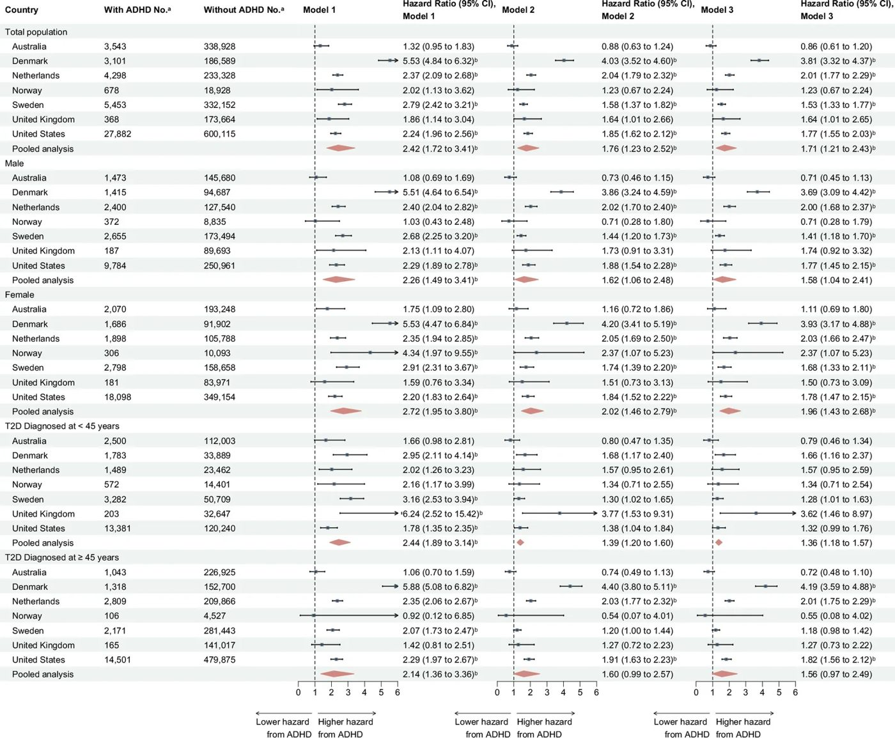
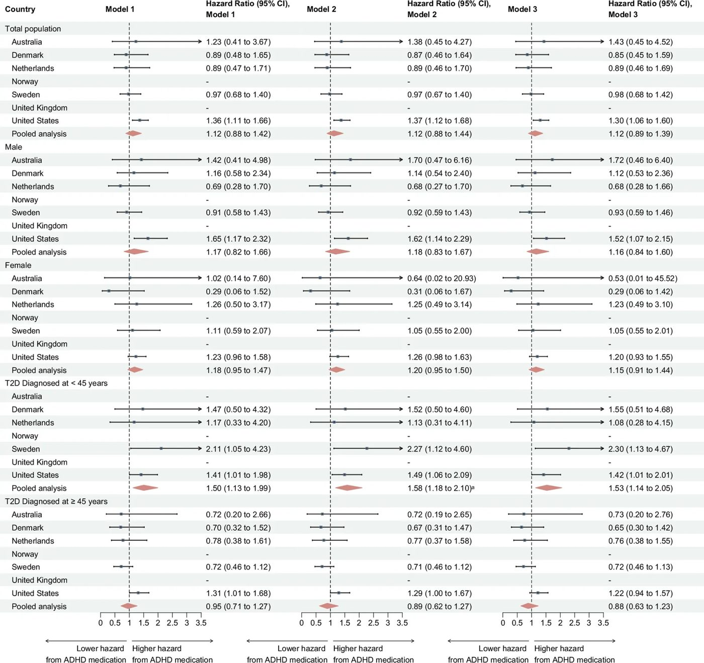
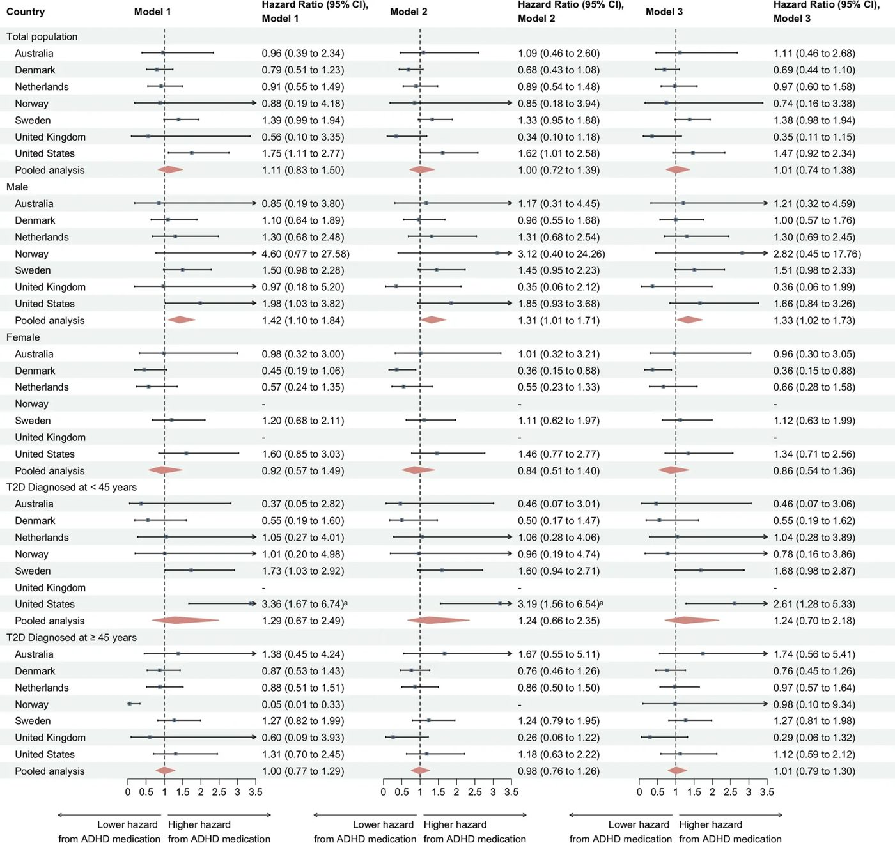

Диабет и СДВГ: как расстройство внимания влияет на риск сердечных заболеваний
 и впервые возникшими большими сердечно-сосудистыми событиями ([MACE](../concepts/major-adverse-cardiovascular-events.md)) по](../../media/2026-10-03/major-adverse-cardiac-events-and-mortality-associated-with-a-f1.jpg)
Полное описание рисунка
Связь между СДВГ и впервые возникшими большими сердечно-сосудистыми событиями (MACE) после постановки диагноза СД 2 типа в разных странах. Сокращения: СД 2: сахарный диабет 2 типа; СДВГ: синдром дефицита внимания и гиперактивности. Примечание: Модель 1 скорректирована по полу, возрасту и календарному году постановки диагноза СД 2; Модель 2 дополнительно скорректирована по наличию психических расстройств, приему психотропных препаратов и кардиометаболических препаратов; Модель 3 дополнительно скорректирована по приему противодиабетических препаратов в период наблюдения. В объединенном анализе использовалась модель со случайными эффектами для объединения размеров эффекта из всех стран. aNo. относится к количеству взрослых, у которых был диагностирован (или не диагностирован) СДВГ или которые получали (или не получали) лекарства от СДВГ к концу исследования. bСтатистически значимо после поправки на частоту ложных обнаружений.
Синдром дефицита внимания и гиперактивности (СДВГ) часто сопровождает диабет второго типа, создавая дополнительные сложности для контроля здоровья. Ученые проанализировали данные почти двух миллионов пациентов, чтобы понять, как это сочетание влияет на риск инфарктов, инсультов и преждевременной смерти. Оказалось, что наличие СДВГ заметно повышает общую смертность, а прием препаратов от этого расстройства требует особого внимания у молодых пациентов.
Главное
- СДВГ у пациентов с диабетом второго типа связан с ростом общей смертности.
- У молодых пациентов с диабетом прием препаратов от СДВГ коррелирует с риском сердечно-сосудистых событий.
- Необходим комплексный подход к лечению диабета и психических расстройств.
Подробнее
В международном когортном исследовании приняли участие 1 929 027 взрослых пациентов с диабетом второго типа (СД2), зарегистрированных в период с 2010 по 2020 год в семи странах (Австралия, Дания, Нидерланды, Норвегия, Швеция, Великобритания и США). Исследователи использовали модели пропорциональных рисков Кокса для оценки частоты серьезных сердечно-сосудистых событий (MACE: инфаркт миокарда, инсульт или смерть от сердечно-сосудистых причин) и общей смертности. Статус СДВГ определялся на основе диагноза или факта получения рецептурных препаратов.
Результаты показали, что у пациентов с СД2 и СДВГ риск общей смертности выше (отношение рисков HR 2,42; 95% ДИ 1,72–3,41), однако прямой связи с MACE в общей группе не выявлено. Важным клиническим наблюдением стало то, что у пациентов с ранним началом диабета (до 45 лет) прием препаратов от СДВГ ассоциировался с повышенной частотой MACE (HR 1,58; 95% ДИ 1,18–2,10). Эти данные подчеркивают необходимость интеграции соматической и психиатрической помощи для пациентов с метаболическими нарушениями.
Ограничения
Исследование носит наблюдательный характер, поэтому нельзя исключить влияние неучтенных факторов образа жизни на сердечно-сосудистые риски.
Полный перевод статьи
Резюме
Актуальность. Синдром дефицита внимания и гиперактивности (СДВГ) связан с повышенным риском развития сахарного диабета 2 типа (СД2). Однако влияние СДВГ и приема препаратов для его лечения на прогноз и исходы для здоровья при СД2 остается неясным. В данном исследовании изучалась связь (1) СДВГ и (2) приема препаратов от СДВГ с частотой серьезных нежелательных сердечно-сосудистых событий (MACE) и общей смертностью после постановки диагноза СД2.
Методы. В этом многонациональном когортном исследовании использовались популяционные данные из Австралии, Дании, Нидерландов, Норвегии, Швеции, Великобритании и США. Используя стандартизированный аналитический протокол, мы выявили взрослых пациентов с впервые установленным диагнозом СД2 в период 2010–2020 гг. Факторами воздействия были (1) СДВГ, определяемый по зарегистрированному диагнозу или выдаче рецептурных препаратов от СДВГ, и (2) среди взрослых с СДВГ — прием препаратов от СДВГ; оба фактора анализировались как зависящие от времени. Основными исходами были MACE (острый инфаркт миокарда, инсульт или смерть, связанная с сердечно-сосудистыми заболеваниями) и общая смертность после постановки диагноза СД2. Модели Кокса для специфических причин оценивали отношения рисков (HR) с 95% доверительными интервалами (CI); результаты были объединены с использованием метаанализа со случайными эффектами и стратифицированы по возрасту и полу.
Важно
У взрослых с СД2 и СДВГ риск общей смертности выше (HR 2,42), при этом прием препаратов от СДВГ связан с повышенным риском MACE у пациентов с ранним началом СД2 (до 45 лет, HR 1,58).
Результаты. В когорту вошли 1 929 027 взрослых с СД2 (909 176 [47,1%] мужчин). В объединенном анализе у взрослых с СД2 и СДВГ наблюдался более высокий уровень общей смертности (HR 2,42; 95% CI 1,72–3,41), но не MACE (HR 1,04; 95% CI 0,81–1,35) после постановки диагноза СД2 по сравнению с лицами без СДВГ. Среди взрослых с СД2 и СДВГ прием препаратов от СДВГ был связан с более высокой частотой MACE у лиц, которым СД2 был диагностирован в возрасте до 45 лет (HR 1,58; 95% CI 1,18–2,10). Эти ассоциации оставались устойчивыми после поправки на пол, возраст, календарный год постановки диагноза СД2, психиатрический анамнез, прием других психотропных препаратов и кардиометаболических средств.
Выводы. У взрослых с СД2 и сопутствующим СДВГ выявлен повышенный риск общей смертности после постановки диагноза СД2, в то время как СДВГ не был последовательно связан с MACE во всех странах. Прием препаратов от СДВГ был связан с более высокой частотой MACE у взрослых с СД2 раннего начала. Полученные данные свидетельствуют о потенциальной необходимости интегрированной соматико-психиатрической помощи и тщательного рассмотрения вопроса о назначении препаратов от СДВГ, что может помочь снизить риск MACE и смертности, особенно при СД2, развившемся в молодом возрасте.
Синдром дефицита внимания и гиперактивности (СДВГ) — это нейроразвивающееся состояние, характеризующееся стойкой невнимательностью, гиперактивностью и импульсивностью, которые нарушают повседневное функционирование. СДВГ диагностируется примерно у 5% детей школьного возраста, и по крайней мере у двух третей из них сохраняются нарушающие жизнедеятельность симптомы во взрослом возрасте [1]. Использование препаратов от СДВГ, как стимуляторов, так и нестимуляторов, заметно возросло за последние десятилетия [2], и многонациональное исследование показало, что 30–60% лиц с СДВГ продолжают лечение в течение пяти лет [3]. Растущее количество данных крупных наблюдательных исследований свидетельствует о том, что СДВГ связан с двукратным увеличением риска сахарного диабета 2 типа (СД2) — распространенного метаболического расстройства, характеризующегося инсулинорезистентностью и стойкой гипергликемией [4–7].
Пояснение
СД2 характеризуется неспособностью организма эффективно использовать инсулин, что ведет к хронически высокому уровню сахара в крови, а MACE — это собирательный термин для наиболее опасных сердечно-сосудистых осложнений.
СД2 является хорошо известным фактором риска как сердечно-сосудистых заболеваний (ССЗ) [8], так и смертности [9], особенно серьезных нежелательных сердечно-сосудистых событий (MACE), включая инфаркт миокарда, инсульт и сердечно-сосудистую смерть [10]. Эти исходы при СД2 часто связаны с кардиометаболическими факторами риска, такими как ожирение, дислипидемия и гипертензия [8]. Крупные популяционные исследования также показали, что СДВГ связан с ССЗ [11] и общей смертностью [12]. С другой стороны, влияние препаратов от СДВГ на долгосрочное здоровье остается неопределенным. Интересно, что исследования показали, что длительный прием может увеличить риск ССЗ [13,14], но также и то, что начало медикаментозной терапии может снизить смертность от неестественных причин, связанных с непреднамеренными травмами, самоубийствами и случайными отравлениями [15].
Эффективное лечение СД2 требует приверженности к приему лекарств, изменения образа жизни, регулярного контроля уровня глюкозы в крови и плановых медицинских осмотров [16]. Эти требования требуют организованности, планирования и устойчивого внимания [17], что особенно сложно для людей с СДВГ. Тем не менее, данные о влиянии СДВГ на исходы СД2 остаются ограниченными и противоречивыми. Одно небольшое исследование (n = 315) не выявило связи между симптомами, подобными СДВГ, и уровнем гемоглобина A1c (HbA1c), липидным профилем или расчетной скоростью клубочковой фильтрации (eGFR) у лиц с СД2 [18], тогда как другое, более крупное исследование (n = 3164), показало, что у лиц с сопутствующими СД2 и СДВГ наблюдался худший гликемический контроль [19].
Учитывая, что лица с СД2 имеют более высокий риск ССЗ и общей смертности, и что СДВГ независимо связан с аналогичными неблагоприятными исходами и может мешать самоконтролю диабета, важно определить, в какой степени СДВГ дополнительно усугубляет эти риски у лиц с СД2. Понимание этой взаимосвязи могло бы способствовать разработке интегрированных и целенаправленных стратегий ухода для улучшения исходов в этой популяции. В данном исследовании мы изучили, в какой степени взрослые с впервые диагностированным СД2, с СДВГ и без него, различаются по частоте возникновения MACE и общей смертности, используя национальные административные или реестровые данные семи стран. Мы также исследовали, в какой степени прием препаратов от СДВГ связан с частотой MACE и общей смертности у людей с сопутствующими СД2 и СДВГ.
Результаты
Характеристики когорты
После применения критериев исключения исходные данные включали 1 929 027 взрослых (909 176 [47,1%] мужчин) с сахарным диабетом 2 типа (СД2) из семи стран в период с 2010 по 2020 год (Дополнительный файл 1: Таблица S7), из которых у 44 748 (2,3%) к концу периода наблюдения был диагностирован СДВГ. Среди лиц с СДВГ 33 301 (74,4%) случай был выявлен до или на момент включения в исследование (Дополнительный файл 1: Таблица S8). Среди тех, у кого диагноз был поставлен после включения в исследование, медиана времени от начала наблюдения до первого зафиксированного диагноза СДВГ варьировалась от 2,0 до 5,7 лет в разных странах (Дополнительный файл 1: Таблица S9). Доля мужчин была ниже в группе с СДВГ, чем в группе без СДВГ (40,2% против 47,3%). Взрослые с СДВГ были моложе на момент постановки диагноза СД2 (диапазон медиан: 34–50 лет) по сравнению с лицами без СДВГ (39–62 года). Во всех странах у взрослых с СДВГ наблюдалось больше психиатрических коморбидностей и случаев применения психотропных препаратов, чем у лиц без СДВГ (Таблица 1). Медиана продолжительности наблюдения варьировалась от 2,2 до 3,9 лет в группе с СДВГ и от 2,8 до 5,5 лет в группе без СДВГ. В течение периода наблюдения у 120 439 взрослых (6,2%) произошли сердечно-сосудистые события (MACE), а 115 945 (6,0%) умерли. Смертность от сердечно-сосудистых заболеваний (ССЗ) составила от 7,6% до 28,5% от всех MACE и от 2,0% до 29,2% от всех случаев смерти, за исключением США, где смертность от ССЗ составляла значительно большую долю всех смертей (95,8%) (Дополнительный файл 1: Таблица S10). Исходные характеристики для анализа приема препаратов от СДВГ (Дополнительный файл 1: Таблица S11) и данные, стратифицированные по статусу СДВГ на момент включения в когорту (Дополнительный файл 1: Таблица S12), представлены в дополнительных материалах.
Важно
В когорте из 1,9 млн взрослых с СД2 распространенность СДВГ составила 2,3%; пациенты с СДВГ были моложе, имели больше сопутствующих психических расстройств и чаще принимали психотропные препараты.
Ассоциация СДВГ с MACE и смертностью от всех причин
Для объединенных данных СДВГ не показал ассоциации с MACE (Модель 1: HR, 1,04; 95% ДИ, 0,81–1,35; Рис. 1); межстрановая гетерогенность была значительной и высокой (MACE: p < 0,0001, I² = 94,4% [95% ДИ, 90,9%–96,6%]). В Швеции СДВГ был статистически значимо связан с повышенным уровнем MACE (HR, 1,44; 95% ДИ, 1,26–1,65; p < 0,002), тогда как в США СДВГ был связан со сниженным уровнем MACE (HR, 0,73; 95% ДИ, 0,69–0,78; p < 0,002). В других странах статистически значимых ассоциаций не наблюдалось (диапазон HR, 0,36–1,56; Рис. 1). После дополнительной поправки на психиатрические коморбидности, использование психотропных и кардиометаболических препаратов в Моделях 2 и 3 ассоциации ослабли (Рис. 1). Объединенный анализ показал более чем двукратное увеличение уровня смертности от всех причин (HR, 2,42; 95% ДИ, 1,72–3,41; p < 0,002; Рис. 2) у взрослых с СДВГ по сравнению с лицами без него после поправки на пол, возраст и календарный год постановки диагноза СД2 (Модель 1). Ассоциация со смертностью от всех причин ослабла, но осталась значимой при дополнительной поправке на психические расстройства, использование психотропных и кардиометаболических препаратов (Модель 2: HR, 1,76; 95% ДИ, 1,23–2,52; p < 0,002) и использование антидиабетических препаратов (Модель 3: HR, 1,71; 95% ДИ, 1,21–2,43; p < 0,002; Рис. 2). Межстрановая гетерогенность была значительной и высокой (p < 0,0001, I² = 95,8% [95% ДИ, 93,3–97,3%]). В страновом анализе СДВГ был статистически значимо связан с повышенным уровнем смертности от всех причин во всех трех моделях в Швеции, Нидерландах, Дании и США (Модель 3: диапазон HR, 1,53–3,81; Рис. 2).
Полное описание рисунка
Связь между СДВГ и впервые возникшими большими сердечно-сосудистыми событиями (MACE) после постановки диагноза СД 2 типа в разных странах. Сокращения: СД 2: сахарный диабет 2 типа; СДВГ: синдром дефицита внимания и гиперактивности. Примечание: Модель 1 скорректирована по полу, возрасту и календарному году постановки диагноза СД 2; Модель 2 дополнительно скорректирована по наличию психических расстройств, приему психотропных препаратов и кардиометаболических препаратов; Модель 3 дополнительно скорректирована по приему противодиабетических препаратов в период наблюдения. В объединенном анализе использовалась модель со случайными эффектами для объединения размеров эффекта из всех стран. aNo. относится к количеству взрослых, у которых был диагностирован (или не диагностирован) СДВГ или которые получали (или не получали) лекарства от СДВГ к концу исследования. bСтатистически значимо после поправки на частоту ложных обнаружений.


Полное описание рисунка
Связь между СДВГ и смертностью от всех причин после постановки диагноза СД 2 типа в разных странах. Сокращения: СД 2: сахарный диабет 2 типа; СДВГ: синдром дефицита внимания и гиперактивности. Примечание: Модель 1 скорректирована по полу, возрасту и календарному году постановки диагноза СД 2; Модель 2 дополнительно скорректирована по наличию психических расстройств, приему психотропных препаратов и кардиометаболических препаратов; Модель 3 дополнительно скорректирована по приему противодиабетических препаратов в период наблюдения. В объединенном анализе использовалась модель со случайными эффектами для объединения размеров эффекта из всех стран. aNo. относится к количеству взрослых, у которых был диагностирован (или не диагностирован) СДВГ или которые получали (или не получали) лекарства от СДВГ к концу исследования. bСтатистически значимо после поправки на частоту ложных обнаружений.
Пояснение
HR (отношение рисков) показывает, во сколько раз риск события выше или ниже в группе с СДВГ по сравнению с группой без него; 95% ДИ (доверительный интервал) отражает точность оценки.
Ассоциация приема препаратов от СДВГ с MACE и смертностью от всех причин
Среди взрослых с СДВГ (n = 33 301) объединенные анализы не показали значимых ассоциаций между приемом препаратов от СДВГ и MACE или смертностью от всех причин (Рис. 3 и 4). Межстрановая гетерогенность не была значимой (MACE: p = 0,34, I² = 12% [95% ДИ, 0–81,7%]; смертность от всех причин: p = 0,18, I² = 33,1% [95% ДИ, 0–71,6%]). Анализы по странам аналогично не показали значимых ассоциаций ни для MACE (диапазон HR, 0,89–1,36), ни для смертности от всех причин (диапазон HR, 0,56–1,75).


Полное описание рисунка
Связь между приемом лекарств от СДВГ и впервые возникшими большими сердечно-сосудистыми событиями (MACE) после постановки диагноза СД 2 типа в разных странах. Сокращения: СД 2: сахарный диабет 2 типа. Примечание: Модель 1 скорректирована по полу, возрасту и календарному году постановки диагноза СД 2; Модель 2 дополнительно скорректирована по наличию психических расстройств, приему психотропных препаратов и кардиометаболических препаратов; Модель 3 дополнительно скорректирована по приему противодиабетических препаратов в период наблюдения. В объединенном анализе использовалась модель со случайными эффектами для объединения размеров эффекта из всех стран. aСтатистически значимо после поправки на частоту ложных обнаружений.


Полное описание рисунка
Связь между приемом лекарств от СДВГ и смертностью от всех причин после постановки диагноза СД 2 типа в разных странах. Сокращения: СД 2: сахарный диабет 2 типа. Примечание: Модель 1 скорректирована по полу, возрасту и календарному году постановки диагноза СД 2; Модель 2 дополнительно скорректирована по наличию психических расстройств, приему психотропных препаратов и кардиометаболических препаратов; Модель 3 дополнительно скорректирована по приему противодиабетических препаратов в период наблюдения. В объединенном анализе использовалась модель со случайными эффектами для объединения размеров эффекта из всех стран. aСтатистически значимо после поправки на частоту ложных обнаружений.
Подгрупповые анализы
Объединенные анализы показали, что ассоциации СДВГ с MACE и смертностью от всех причин были согласованы по полу и возрастным группам (Рис. 1 и 2). Результаты по приему препаратов от СДВГ были аналогично сопоставимы по полу (Рис. 3 и 4). При стратификации по возрасту в более молодой группе (18–44 года) был выявлен более высокий уровень MACE со статистически значимой ассоциацией после поправки на множественные сравнения в Модели 2 (HR, 1,58; 95% ДИ, 1,18–2,10; Рис. 3).
Психиатрическая коморбидность, n (%)
1 058 (29,9) 21 301 (6,3) 1 016 (33,0) 12 536 (6,7) 1 839 (42,9) 16 946 (7,3) 222 (32,8) 1 296 (6,8) 3 304 (60,9) 24 855 (7,5) (40,3) 24 744 (14,2) 12 133 (44,3) 106 163 (17,7)
Применение психотропных препаратов, n (%) 2 199 (62,2) 80 039 (23,6) 1 487 (48,2) 35 864 (19,2) (13,6) 10 592 (4,5) 393 (58,1) 5 467 (28,9) 3 280 (60,5) 65 883 (19,8) (47,7) 46 380 (26,7) 9 913 (36,2) 88 787 (14,8)
Применение кардиометаболических препаратов, n (%)
3 348 (94,7) 317 190 (93,6) (29,6) 96 480 (51,7) 4 288 (100,0) 233 338 (100,0) (6,4) 3 424 (18,1) 1 101 (20,3) 135 379 (40,8) (79,6) 134 046 (77,2) 4 799 (17,5) 104 529 (17,4)
Сокращения: T2D — сахарный диабет 2 типа, ADHD — синдром дефицита внимания и гиперактивности, MACE — большие неблагоприятные сердечно-сосудистые события, IQR — межквартильный размах. aВзрослые с ADHD и без него к концу периода наблюдения (для исхода MACE).
Анализ чувствительности. В связи с ограниченной доступностью данных анализ чувствительности, ограниченный клинически диагностированным T2D, проводился только в Швеции и Великобритании. В этих анализах мы наблюдали статистически значимую связь между ADHD и MACE (Модель 1: HR, 1,48; 95% ДИ, 1,24–1,77; p < 0,002), хотя эта связь переставала быть значимой после поправки на коморбидность и применение лекарственных средств (Таблица SN 13). Оценки эффекта для смертности от всех причин остались практически неизменными, что отражается в перекрывающихся доверительных интервалах (Таблица SN 14). В анализах чувствительности, где ADHD определялся исключительно по клиническому диагнозу, оценки эффекта MACE и смертности от всех причин были сопоставимы с таковыми в основном анализе (Таблицы SN 13–16). Оценки оставались согласованными после исключения взрослых с T2D, диагностированным после 65 лет (Таблицы SN 13–16), и после поправки на социально-экономический статус (Таблицы SN 13–16). В анализах чувствительности, где ADHD определялся до исходного уровня, оценки эффекта MACE и смертности от всех причин были сопоставимы с таковыми в основном анализе (Таблицы SN 13–14).
Важно
Анализ чувствительности подтвердил устойчивость основных результатов, показав, что связь между ADHD и MACE сохраняется при различных методах определения диагноза и поправках на социально-экономические факторы. [!tip] Анализ чувствительности — это проверка того, насколько сильно меняются выводы исследования при изменении исходных предположений или критериев отбора данных, что помогает оценить надежность результатов.
Обсуждение
В этом крупном многонациональном когортном исследовании у взрослых с СД2 и сопутствующим СДВГ уровень смертности от всех причин был более чем в два раза выше по сравнению с лицами без СДВГ. Хотя СД2 является хорошо известным фактором риска смертности, наши результаты показывают, что СДВГ связан с дополнительным риском. Напротив, мы не наблюдали устойчивой связи между СДВГ и большими неблагоприятными сердечно-сосудистыми событиями (MACE). Однако применение препаратов для лечения СДВГ было связано с повышением уровня MACE на 51% среди взрослых с СД2 раннего начала. В совокупности эти данные подчеркивают сложное взаимодействие между СДВГ, сердечно-сосудистой коморбидностью и смертностью у взрослых с СД2, а также указывают на необходимость повышения осведомленности о СДВГ при лечении диабета и усиления клинической поддержки для улучшения показателей здоровья в этой популяции. Хотя требуется воспроизведение результатов, наши данные свидетельствуют о том, что препараты для лечения СДВГ следует назначать с осторожностью и тщательно контролировать их прием у взрослых с СД2 и СДВГ. Необходимо дальнейшее изучение того, почему молодые люди могут быть более уязвимы к сердечно-сосудистым заболеваниям (ССЗ), связанным с приемом препаратов от СДВГ, что может помочь в разработке целевых профилактических стратегий.
Связь СДВГ с MACE и смертностью от всех причин
СДВГ был связан с более высокой смертностью от всех причин у взрослых с СД2, причем эта связь была устойчивой во всех возрастных группах и независимо от пола, психиатрических коморбидностей, приема психотропных препаратов и кардиометаболической терапии. Хотя СД2 является хорошо установленным фактором риска смертности, наши результаты предполагают, что сопутствующий СДВГ вносит дополнительный вклад.
Важно
У взрослых с СД2 наличие СДВГ более чем вдвое повышает риск смертности от всех причин, а прием препаратов от СДВГ при СД2 раннего начала увеличивает риск MACE на 51%.
Связь препаратов для лечения СДВГ с MACE и смертностью от всех причин
При стратификации по возрасту на момент постановки диагноза СД2 прием препаратов от СДВГ был связан с повышенным риском MACE у молодых взрослых, но не у пожилых. Это может отражать более низкую исходную распространенность ССЗ у молодых взрослых, что потенциально делает возникающие события и эффекты препаратов более заметными, наряду с повышенной уязвимостью к ССЗ, связанной с СД2 раннего начала, обусловленной ускоренным метаболическим ухудшением и сопутствующими факторами риска, такими как ожирение. У пожилых людей отсутствие повышенного риска может частично отражать более осторожную практику назначения, включая более низкие начальные дозы и постепенное титрование. В отличие от исследований в общей популяции, сообщающих о сходных сердечно-сосудистых рисках во всех возрастных группах, наши результаты показывают, что возрастные различия могут наблюдаться в популяциях с СД2. Насколько нам известно, это первое исследование, изучающее влияние препаратов от СДВГ на MACE и смертность у лиц с СД2. Хотя в целом не было выявлено статистически значимого сердечно-сосудистого вреда, стратифицированный анализ предполагает потенциально повышенный риск у лиц с СД2 раннего начала. Предыдущие исследования связывали длительный прием препаратов от СДВГ с повышенным сердечно-сосудистым риском, а для атомоксетина — с более высоким риском СД2, тогда как другие сообщали о снижении смертности от неестественных причин после начала медикаментозной терапии. Ожирение и нездоровое пищевое поведение, связанные с СДВГ, а также подавление аппетита, связанное с приемом препаратов от СДВГ, могут частично способствовать наблюдаемым ассоциациям, учитывая их установленную связь с ССЗ и смертностью. Будущие исследования должны изучить опосредующую роль ожирения во взаимосвязи между СДВГ, его лечением и сердечно-сосудистыми исходами. Кроме того, будущие исследования должны напрямую сравнивать ССЗ и смертность среди лиц с СДВГ, включая популяции без СД2, чтобы лучше разделить независимый и совместный вклад СДВГ и метаболических заболеваний в сердечно-сосудистый риск и смерть от естественных причин. Необходимы более крупные лонгитюдные исследования с более длительным периодом наблюдения для уточнения сердечно-сосудистых рисков, специфичных для возраста и класса препаратов.
Сильные стороны и ограничения
Использование популяционных данных с трех континентов делает наши результаты более применимыми к взрослым пациентам с СД2 и СДВГ, получающим медицинскую помощь в различных системах здравоохранения. Следует учитывать несколько ограничений. Во-первых, возможна систематическая ошибка выявления: лица с СДВГ могут чаще обращаться за медицинской помощью, что потенциально способствует более раннему лечению сердечно-сосудистых заболеваний и замедлению прогрессирования до MACE. Во-вторых, СДВГ может быть недодиагностирован у пожилых людей, а возможная гипердиагностика у молодых взрослых могла сместить оценки в сторону нулевого эффекта. В-третьих, методы определения СД2, вероятно, различались в разных странах, особенно там, где отсутствовали данные первичной медико-санитарной помощи, хотя определение СД2 через прием противодиабетических препаратов позволило охватить большинство случаев. Важно отметить, что анализы чувствительности, ограниченные взрослыми с клинически диагностированным СД2, дали согласованные результаты. Определения MACE, вероятно, более единообразны в разных странах, поскольку такие события обычно лечатся в специализированных учреждениях, хотя различия в системах здравоохранения и диагностической практике могли способствовать вариативности выявленных случаев MACE.
Важно
Исследование обладает высокой обобщающей способностью благодаря охвату трех континентов, однако результаты ограничены потенциальной систематической ошибкой выявления и различиями в диагностике СДВГ и СД2.
В-четвертых, анализ влияния препаратов для лечения СДВГ был ограничен малым размером выборки, что требует воспроизведения в более крупных когортах. Кроме того, определения экспозиции, основанные на интервалах между повторными выдачами препаратов (75-й процентиль), могут не полностью отражать реальный прием лекарств, особенно при наличии перекрывающихся выдач или нерегулярных графиков получения препаратов. Использование 3-месячного окна до начала наблюдения для определения приема психотропных/кардиометаболических препаратов может не охватить пациентов с хроническим приемом без недавних повторных выдач, что потенциально ведет к неверной классификации. В-пятых, результаты могут частично отражать смешивание по показаниям, поскольку леченые лица чаще имеют более тяжелые симптомы СДВГ, или, наоборот, тяжелая симптоматика СДВГ затрудняет приверженность лечению. Кроме того, в некоторых странах (например, Дания и Австралия) определение СДВГ основывалось преимущественно на записях о приеме лекарств из-за ограниченности данных специализированной/частной помощи, что исключает сравнение групп с медикаментозным лечением СДВГ и без него. Нельзя исключить остаточное смешивание или медиацию неучтенными факторами сердечно-сосудистого риска (например, курение, ИМТ, артериальное давление, гликемический контроль, функция почек и употребление психоактивных веществ), что может частично объяснять наблюдаемые ассоциации. Будущие исследования с использованием более детальных кардиометаболических показателей и данных об образе жизни необходимы для лучшего понимания связи между СДВГ, приемом лекарств и сердечно-сосудистыми исходами и смертностью.
Пояснение
Смешивание по показаниям (confounding by indication) — ситуация, когда наличие заболевания является причиной назначения препарата, и именно это заболевание (а не сам препарат) влияет на изучаемый исход.
В-шестых, поправка на использование противодиабетических препаратов, меняющееся во времени, могла внести систематическую ошибку коллайдера, так как прием препаратов зависит как от статуса СДВГ, так и от тяжести СД2. Хотя противодиабетические препараты были включены только для оценки устойчивости результатов, а не для оценки причинно-следственных связей, будущие исследования механизмов должны четко указывать свои причинно-следственные допущения. В-седьмых, существенная гетерогенность между странами предполагает, что объединенные оценки следует интерпретировать как средние эффекты в различных условиях, а не как единый общий эффект. Различия в направлении оценок, несмотря на перекрывающиеся доверительные интервалы, подчеркивают потенциальную статистическую неопределенность, а также различия в системах здравоохранения, источниках данных, методах выявления СДВГ и возрастной структуре населения, поэтому при применении этих результатов к локальным условиям следует проявлять осторожность. Наконец, обобщаемость результатов на страны с низким и средним уровнем дохода может быть ограничена.
Осторожно
Наблюдаемые ассоциации могут быть искажены неучтенными факторами риска, такими как образ жизни и тяжесть сопутствующих заболеваний, что требует осторожности при интерпретации причинно-следственных связей.
Заключение
Данное многонациональное когортное исследование показывает, что у взрослых с сахарным диабетом 2 типа (СД2) СДВГ ассоциирован с повышенным риском смертности от всех причин, но не с большими неблагоприятными сердечно-сосудистыми событиями (MACE). Полученные данные также свидетельствуют о том, что применение препаратов для лечения СДВГ у взрослых с СД2 связано с повышенным риском MACE у лиц более молодого возраста. Эти результаты подчеркивают необходимость усиления поддержки взрослых с коморбидным СД2 и СДВГ, а также указывают на важность интегрированной междисциплинарной помощи с участием специалистов как психиатрического, так и соматического профиля, что может способствовать снижению рисков MACE и смертности. Необходимы дальнейшие исследования для воспроизведения этих результатов и изучения фундаментальных механизмов, связывающих СДВГ с MACE и смертностью у взрослых с СД2.
Важно
СДВГ у взрослых с СД2 повышает риск смертности от всех причин, а прием препаратов от СДВГ коррелирует с риском MACE у молодых пациентов, что требует междисциплинарного подхода к лечению.
Осторожно
Исследование носит наблюдательный характер, поэтому выявленные ассоциации не доказывают причинно-следственную связь.
Методы
Источники данных
Мы использовали реальные данные на индивидуальном уровне из семи стран (Австралия, Дания, Нидерланды, Норвегия, Швеция, Великобритания [UK] и США [US]), связанные с медицинскими записями и данными о выдаче лекарственных средств (подробности в Таблице S1). Для большинства стран данные о диагнозах и назначении или выдаче лекарственных средств (далее — «выдача») были доступны с 1 января 2009 года по 31 декабря 2020 года (исключения см. в Таблице S1). Было получено этическое одобрение на использование каждого источника данных. Информированное согласие не требовалось, поскольку исследование опиралось на реестровые и административные данные (Дополнительный файл 1: sMethods). Мы придерживались рекомендаций STROBE (Strengthening the Reporting of Observational Studies in Epidemiology) для когортных исследований.
Популяция и дизайн исследования
В исследование включались взрослые в возрасте не менее 18 лет, у которых впервые был зарегистрирован диагноз сахарного диабета 2 типа (СД2) (Международная статистическая классификация болезней, 10-й пересмотр [МКБ-10] — код E11) или назначение сахароснижающих препаратов, за исключением инсулинов (Анатомо-терапевтическо-химическая классификация [АТХ] — код A10B), в период с 2010 по 2020 год. Мы определяли взрослых с впервые диагностированным СД2, используя период «отмывки» (washout period) продолжительностью ≥12 месяцев без каких-либо записей о диагнозе СД2 или выдаче сахароснижающих препаратов. Мы исключали взрослых с отсутствующими данными о поле или дате рождения, а также тех, кто эмигрировал, умер, имел в анамнезе записи о больших нежелательных сердечно-сосудистых событиях (MACE) (Таблица S2) или имел сахарный диабет 1 типа (СД1) (код МКБ-10 E10; код МКБ-8/9 250 до 2010 года или назначение только инсулина: код АТХ A10A) до или на момент постановки диагноза СД2. Критерии исключения зависели от доступности данных в каждой стране (Таблица S3). Для вторичного анализа препаратов от СДВГ мы включали только тех взрослых, у которых были записи о диагнозе СДВГ или выдаче соответствующих препаратов до или на момент постановки диагноза СД2. Наблюдение за популяцией велось с даты постановки диагноза СД2 (начало наблюдения) до наступления интересующих исходов, смерти, эмиграции или окончания периода исследования (31 декабря 2020 года, если не указано иное) (Рис. S1).
Измерения: воздействие
В основном анализе воздействием считалось наличие СДВГ, определяемое как наличие записей о диагнозе СДВГ (код МКБ-10 F90) или выдаче препаратов для лечения СДВГ (коды АТХ: метилфенидат [N06BA04], амфетамин [N06BA01], дексамфетамин [N06BA02], лиздексамфетамин [N06BA12], атомоксетин [N06BA09], гуанфацин [C02AC02]). СДВГ рассматривался как зависящее от времени воздействие в ходе наблюдения (Рис. S2), но после регистрации статус СДВГ оставался неизменным до конца исследования. Во вторичном анализе препараты от СДВГ рассматривались как зависящее от времени воздействие, что допускало наличие нескольких периодов приема и отсутствия приема препаратов в течение периода наблюдения (Рис. S3). Периоды приема препаратов определялись как дата выдачи плюс специфичный для каждой страны 75-й процентиль интервала между выдачами препаратов от СДВГ (т.е. время между двумя последовательными выдачами) среди взрослых одного пола и возрастной группы (молодые взрослые [18–34 года], среднего возраста [35–64 года], пожилые [≥65 лет]) (Таблица S4). Перекрывающиеся периоды приема препаратов не учитывались (т.е. если два периода приема перекрывались, дата начала последующей выдачи не сдвигалась вперед). Интервалы между окончанием одного периода приема и началом следующего считались периодами отсутствия приема.
Пояснение
Период «отмывки» (washout period) — это временной интервал, в течение которого у пациента не должно быть признаков заболевания или приема лекарств, что позволяет исследователям убедиться, что случай заболевания действительно является впервые выявленным.
Исходы
Исходами были MACE и смертность от всех причин. MACE представляли собой комбинированный показатель, определяемый по записям об остром инфаркте миокарда (коды МКБ-10 I21–I23), инсульте (I60–I64) или смерти, связанной с сердечно-сосудистыми заболеваниями (код I00–I99 как причина смерти).
Ковариаты
Ковариаты включали календарный год и возраст на исходном уровне (начало наблюдения) для поправки на временные и возрастные эффекты, а также пол. Психиатрическая коморбидность моделировалась как бинарная переменная на основе любого психиатрического диагноза в течение пяти лет до начала наблюдения (коды в Таблице S2). Использование психотропных (за исключением препаратов от СДВГ) и кардиометаболических препаратов рассматривалось как бинарная переменная на основе выдачи в течение трех месяцев до начала наблюдения (коды в Таблице S5) для идентификации текущего лечения на исходном уровне, что снижает риск ошибочной классификации прошлого или неактивного использования как текущего воздействия. Использование антидиабетических препаратов (инсулин и сахароснижающие средства) моделировалось как зависящая от времени переменная, где периоды приема определялись как дата назначения плюс специфичный для страны 75-й процентиль интервала выдачи (коды в Таблице S5). Социально-экономический статус (СЭС) был разделен на четыре уровня, где это было возможно, с использованием специфичных для страны показателей дохода или образования (Таблица S6).
Статистический анализ
В данном исследовании применялся подход распределенной сети с использованием общей модели данных и стандартизированного аналитического протокола для гармонизации данных и анализов на всех участвующих площадках. Протокол и план анализа были предварительно зарегистрированы (https://doi.org/10.17605/OSF.IO/FZA9B). Мы собрали исходные характеристики каждой исследуемой популяции на момент постановки диагноза СД2, стратифицированные по статусу СДВГ в конце периода наблюдения. Для оценки связи СДВГ и приема препаратов от СДВГ с MACE и смертностью от всех причин мы провели регрессию Кокса для оценки отношений рисков (HR) для каждого воздействия отдельно по странам, используя время с момента постановки диагноза СД2 в качестве временной шкалы. Модели последовательно корректировались с учетом пола, возраста и календарного года на момент постановки диагноза СД2 (Модель 1); дополнительно с учетом психиатрического анамнеза, приема психотропных и кардиометаболических препаратов (Модель 2); и дополнительно с учетом приема антидиабетических препаратов в течение периода наблюдения (Модель 3).
Пояснение
Регрессия Кокса — это статистический метод для анализа времени до наступления определенного события (например, смерти или сердечно-сосудистого осложнения), позволяющий оценить влияние различных факторов риска на это время.
Для определения статистической значимости использовался порог p-значения, скорректированный с учетом частоты ложных обнаружений (FDR), равный 0,002, полученный с помощью процедуры Бенджамини-Хохберга. Анализы были стратифицированы по полу и возрастным группам на исходном уровне (18–44 года; ≥45 лет). HR по странам были объединены с использованием метаанализа со случайными эффектами с 95% доверительными интервалами (ДИ). Межстрановая гетерогенность оценивалась с помощью Q-критерия Кокрена и статистики I², при этом p < 0,05 или I² > 75% указывали на значительную гетерогенность.
В анализах чувствительности мы провели несколько альтернативных спецификаций для проверки надежности наших выводов. Во-первых, мы переопределили исследуемую популяцию, используя клинический диагноз СД2, исключив лиц, выявленных исключительно по записям о приеме лекарств. Во-вторых, мы переопределили статус СДВГ, основываясь только на клиническом диагнозе СДВГ. В-третьих, анализы были ограничены взрослыми моложе определенного возраста на исходном уровне для оценки потенциальных возрастных различий. В-четвертых, мы дополнительно скорректировали все модели с учетом социально-экономического статуса (SES). В-пятых, мы переопределили статус СДВГ как временную фиксированную переменную до исходного уровня. Управление данными и анализы выполнялись с помощью R (версия 4.2.3).
Схема исследования
Статья опубликована в рецензируемом журнале BMC medicine. Но и опубликованный результат — одно исследование, а не окончательный вывод.
Источник
| Источник | Категория | Лицензия |
|---|---|---|
| BMC medicine (Europe PMC) | psychiatry and clinical psychology | CC BY 4.0 |
Источники
| Источник | Ссылка |
|---|---|
| Страница статьи | europepmc.org |
| Полный текст (PDF) | link.springer.com |
| Копия PDF | github.com |
| DOI | doi.org |
| Метаданные Crossref | api.crossref.org |
| Europe PMC | europepmc.org |